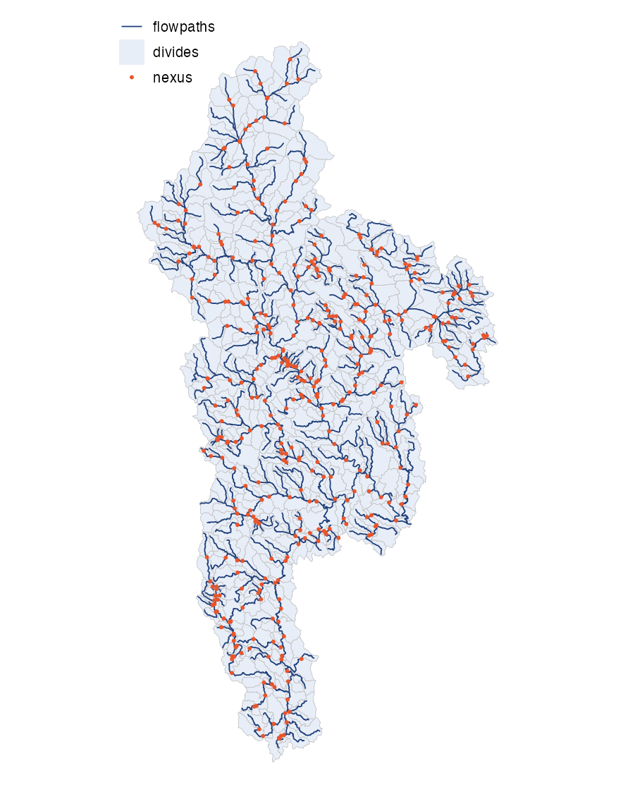

nextgen_fabric() assembles the
NextGen-ready product: the routing network (flowpaths,
flowlines, nexuses), the catchment divides, the aspatial network table,
and the model attributes. It reads the refactored + aggregated fabric
and, optionally, a RiverML channel table and a lake set.
Inputs and outputs
Inputs: fabric_dir (refactor and
aggregate output), FDR/FAC grids, and optionally
hydraulics_path (a RiverML channel table),
lakes_path and lake_mask_path.
Output:
{out_dir}/vpu_{vpuid}/ngen_vpu{id}.gpkg with layers
flowpaths, flowlines, divides,
nexus, hydrolocations, pois,
network, flowpath-attributes,
flowline-attributes, and lakes where a domain
has waterbodies.
Output schema
Each ngen_vpu*.gpkg contains:
| Layer | Geometry | Key fields |
|---|---|---|
flowpaths |
Multi Linestring |
flowpath_id, flowpath_toid,
vpuid, lengthkm, areasqkm,
mainstem_id, total_dasqkm,
upstream_id, num_upstreams
|
flowlines |
Linestring |
flowline_id, flowline_toid,
flowpath_id, mainstem_id,
flowpath_constituent, routeable
|
divides |
Multi Polygon |
divide_id, flowpath_id,
vpuid, areasqkm
|
nexus |
Point |
nexus_id, nexus_toid,
vpuid
|
network |
Full flowpath-nexus topology plus hydroseq,
mainstem_id, total_dasqkm, and the reference
lineage |
|
hydrolocations |
Point |
hl_reference, hl_uri,
hl_link, hl_type, hl_class,
hl_source, hl_reach_change_reason,
poi_drop_reason (only where a hydrolocation could not be
placed), and the gage drainage-area columns
poi_da_ref_sqkm, poi_da_ngen_sqkm,
poi_da_ratio
|
pois |
Point |
poi_id, flowpath_id,
hl_count, hl_classes, hl_types,
upstream_id, num_upstreams
|
lakes |
Point (CONUS) or Polygon |
lake_id and the waterbody routing attributes T-Route
reads |
flowpath-attributes |
Trapezoidal channel parameters per flowpath: BtmWdth,
TopWdth, ChSlp, TopWdthCC,
roughness n and nCC, bed slope
So, and Muskingum MusX/MusK
|
|
flowline-attributes |
The same parameters per flowline |
Flowpaths and divides are written as multi-part types, though nearly all features are single-part. Lake membership comes from the reference network’s waterbody attribution.
Two flags describe the flowlines differently.
flowpath_constituent marks the flowlines lying on their
flowpath’s traced line, separating them from off-network tributary and
connector geometry. routeable marks the closed routing set,
the constituent flowlines plus the connectors needed to reach a
terminal, and it is the flag to filter on when building a routing
network.
A hydrolocation stays where its source put it; where it cannot, the
move and its reason are recorded. See
vignette("poi-contract"). The field-level schema is in
docs/data_model.md in the source repository.
Global IDs use prefixed integer encoding:
-
fp-{n}: flowpath -
cat-{n}: divide (catchment);lnd-{n}for landscape divides -
nex-{n}: interior nexus -
tnx-{n}: terminal nexus (ocean or domain boundary drain)
Each flowpath drains to a nexus (flowpath_toid), the
nexus drains to the next flowpath (nexus_toid), and each
flowpath owns at most one divide.

What it does
-
Sub-flowline topology
(
add_flowlines()): split aggregated flowpaths into routing units, splitting segments longer than ~2 km and breaking at POIs and junctions. - Divide clip / coalesce / clean to match the flowlines.
-
NextGen topology
(
nextgen_from_gpkg()): build nexus geometries, assign prefixed ids (fp-,cat-,nex-,tnx-), and wiretoidconnectivity. -
Aspatial network
(
build_aspatial_network()): the full fp to nex to fp table with hydrosequence, mainstem (level path) id, and total drainage area. -
Finalize the data model
(
finalize_data_model()): slope and, when supplied, channel attributes and lake flags.
Running it
library(hydrofabric)
nextgen_fabric(
vpuid = "01",
fabric_dir = "out/vpu_01", # dir with refactor + aggregate output
fdr_path = "fdr.vrt",
fac_path = "fac.vrt",
out_dir = "out",
coverage_min = 0.95 # override a default
)Parameters
| Parameter | Default | Controls |
|---|---|---|
coverage_min |
0.90 | divide-coverage floor + coalesce/clip threshold (0-1) |
threshold_sqkm |
0.001 | ghost-divide prune threshold (km^2) |
threshold_m2 |
1000 | fill-small-holes area threshold (m^2) |
gap_fill_area |
1000 | clean-layer gap-fill area (ngen phase) |
overlap_rule |
“max-area” | divide overlap resolution rule |
Routing attributes and lakes are added when
hydraulics_path, lakes_path and
lake_mask_path are supplied (see
?nextgen_fabric).
Validation
Ends with check_invariants("ngen", ...), which stops the
build if a gating check fails: an acyclic flowpath-nexus graph, at most
one divide per flowpath, resolvable toids, divide coverage
and area conservation. See vignette("invariants").
Next
Merge per-VPU outputs into domain products: see the merge vignette.